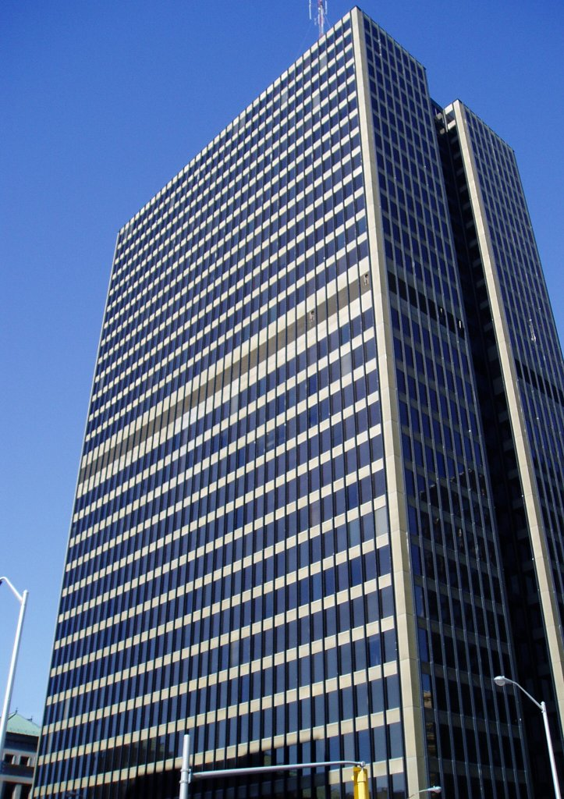
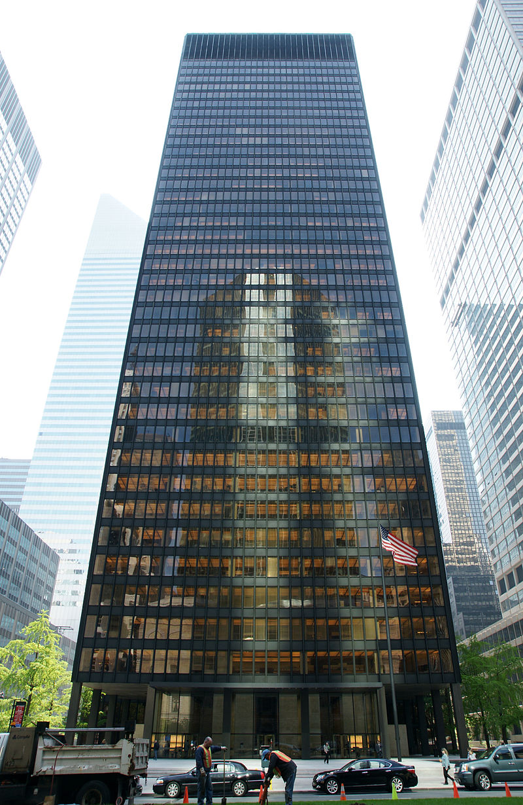
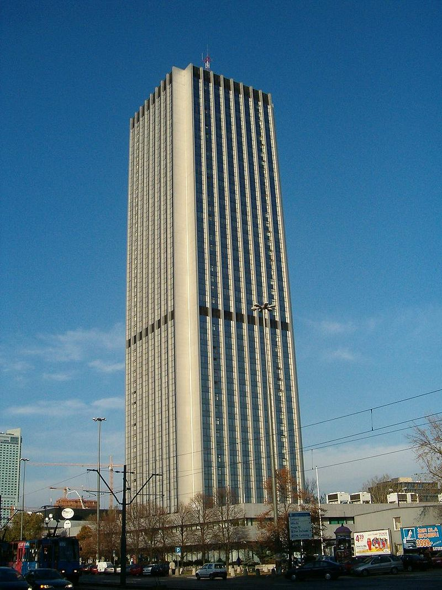
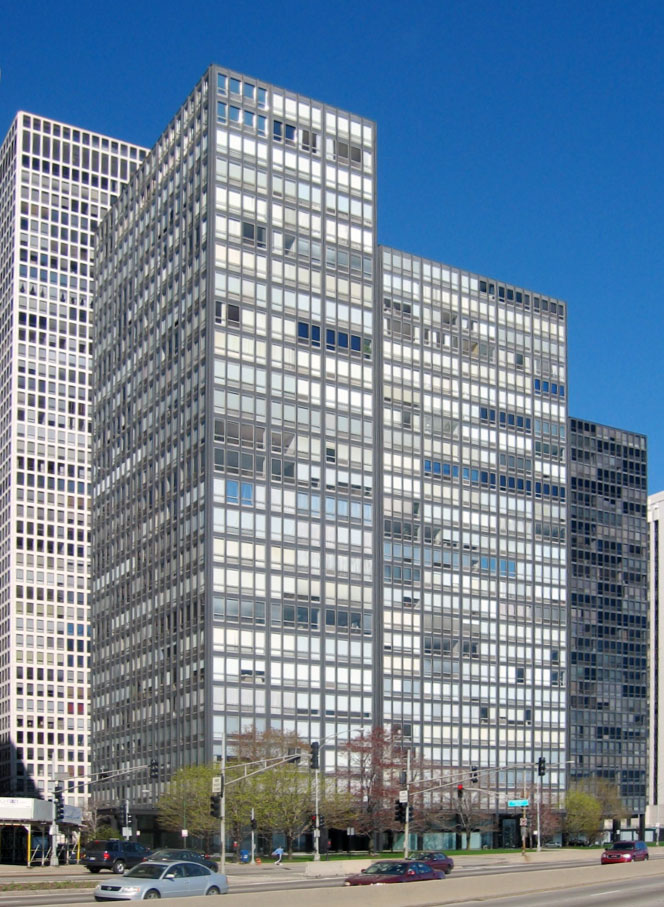

Styl międzynarodowy to prąd architektury modernistycznej, z którym często jest ona utożsamiana, rozwijający się od około 1922 w Europie, a później na całym świecie.
Sanatorium Paimio w Finlandii, Alvar Aalto
Istotą architektury miało być nie tworzenie mas budynku, a definiowanie i kształtowanie ograniczonej przestrzeni. Autorzy skupiali się na zewnętrznym wyglądzie i wyrazie budynków, modernistycznym eksperymentom z wnętrzem poświęcając mniej miejsca. Nowoczesny budynek miał ich zdaniem sprawiać wrażenie lekkości.
Określenie powstało jako sztuczny termin stworzony przez Philipa Johnsona i Henry'ego-Russella Hitchcocka w 1932 na oznaczenie ogółu prądów minimalistycznych i funkcjonalistycznych w europejskiej architekturze modernistycznej lat 20. i 30. XX w. Terminy racjonalistyczna architektura i nowoczesny ruch są często używane zamiennie ze stylem międzynarodowym.
Dom towarowy Schocken w Chemnitz, E. Mendelsohn
Styl charakteryzuje się naciskiem na objętość nad masą, użycie lekkich, masowo produkowanych materiałów przemysłowych, odrzucenie wszelkich ornamentów i kolorów, powtarzalne formy modułowe i użycie płaskich powierzchni, zwykle na przemian z obszarami szklanymi. Styl międzynarodowy zdaniem autorów rezygnował ze wszelkiej dekoracji, poza podkreślającym charakter budynku abstrakcyjnym malarstwem ściennym oraz dziełami sztuki. Jako preferowane materiały elewacyjne wymieniali okładziny drewniane, płyty ceramiczne i luksfery. Płaszczyzny tynku i widoczny żelbet, choć jak zauważali kojarzone z nowoczesną architekturą, dodawały jakoby budynkowi ciężaru, dotyczyło to także większości przypadków użycia cegły. Obszerne przeszklenia miały być stosowane dla nadania ścianie lekkości.
Najpopularniejsi architekci stylu międzynarodowego:
Chcesz dowiedzieć się więcej o stylu międzynarodowym? Sprawdź Wikipedię, klikając tutaj.
Poznaj więcej budynków charakterystycznych dla stylu międztnarodowego:
|
 Wieża C z Place de Ville |
 Budynek Seagram w Nowym Jorku |
|
 Oxford Tower, Jerzy Skrzypczak, H. Świergocka-Kaimowa, Wojciech Grzybowski |
 Apartamentowce Lake Shore Drive w Chicago, L. Mies van der Rohe |